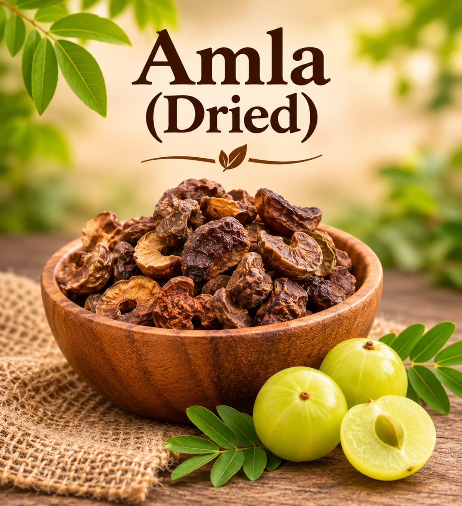
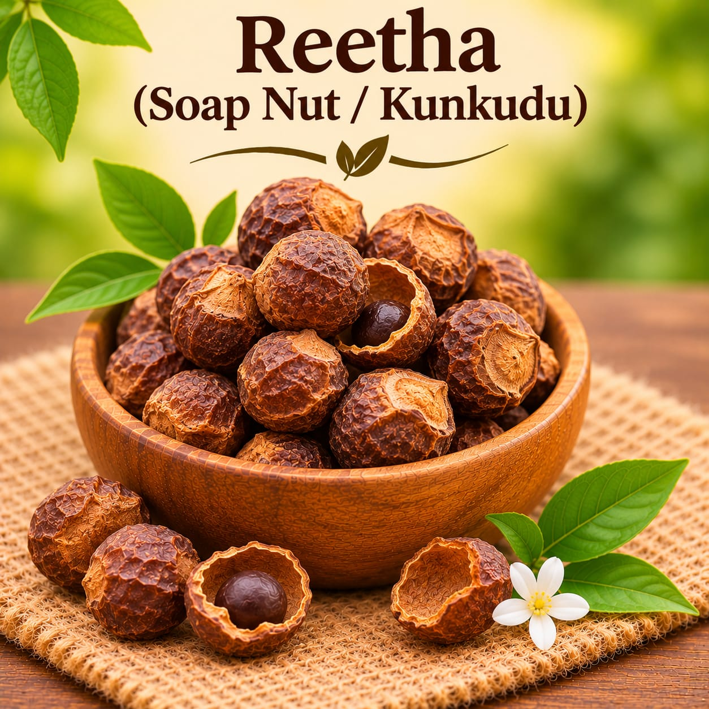
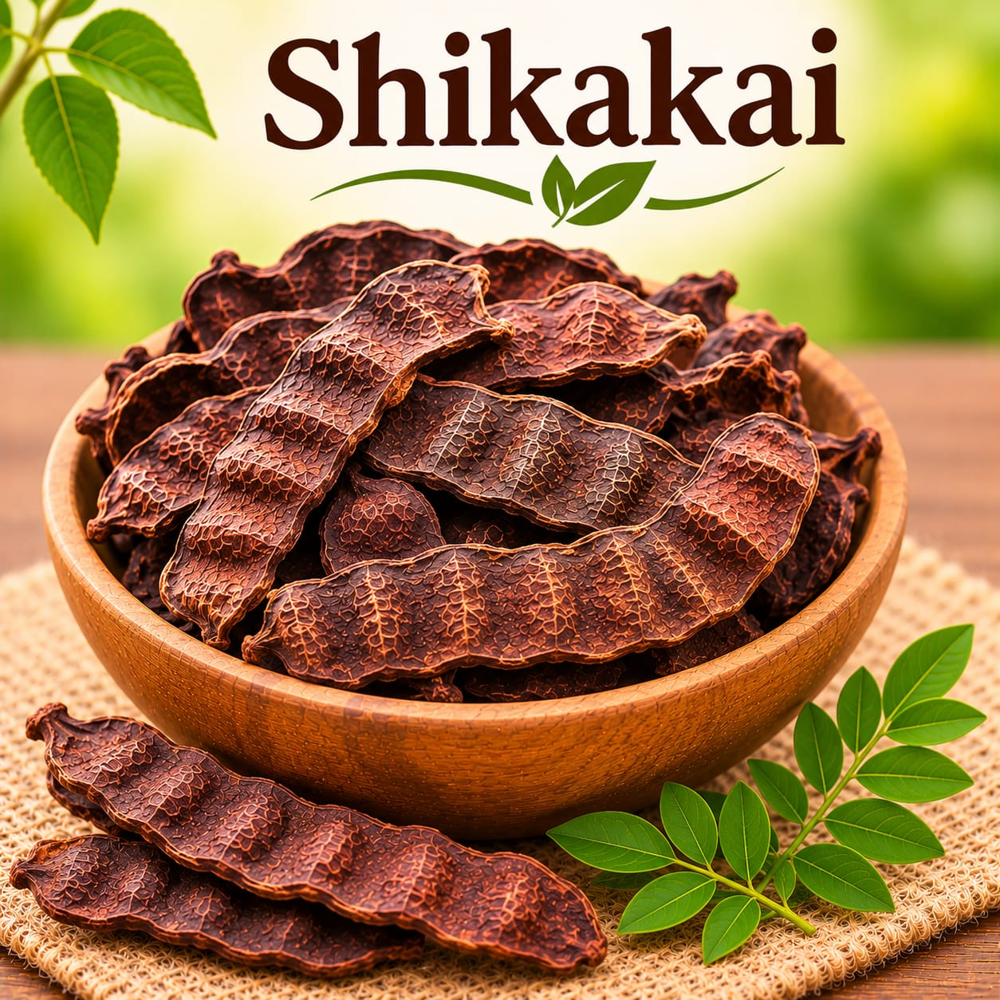

Whole botanical
Amla (Dried)
Dried whole amla, also known as Indian gooseberry.
Ask for current priceAsk
Browse whole dried botanicals from Sahaj Organics in Chittoor, India. These ingredients are supplied in whole form, so their texture and preparation differ from ready-milled powders.
Browse all dried botanicalsChoose whole ingredients when a recipe calls for that form, and confirm the preparation method and suitability for your intended product before use.

Dried whole amla, also known as Indian gooseberry.


Whole botanicals and their powdered versions are listed separately. Contact us to confirm the exact product form, current availability, and price.
Need a whole botanical or its powdered form? Ask Sahaj Organics about product formats and current availability.